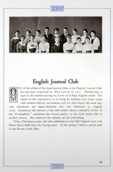
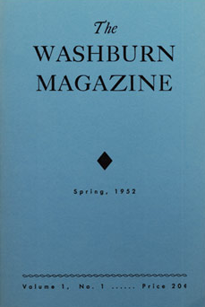
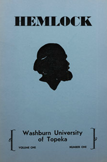
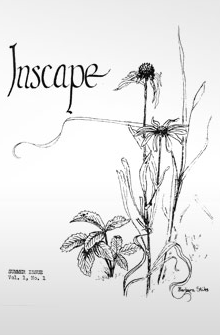

In 1972 Washburn University undergraduates founded Inscape as a literary publication for students and the surrounding community in Topeka, Kansas. The magazines efforts eventually merged with the academic curriculum for creative writing majors at Washburn. Inscape now publishes creative written and visual works from across the country and beyond.
Washburns English Journal Club, CA. 1917
Washburn Magazine Spring 1952 Cover
Hemlock: Washburns First Literary Journal Emerged in the 1950s
Vol. 1 Num. 1 CA. 1972
